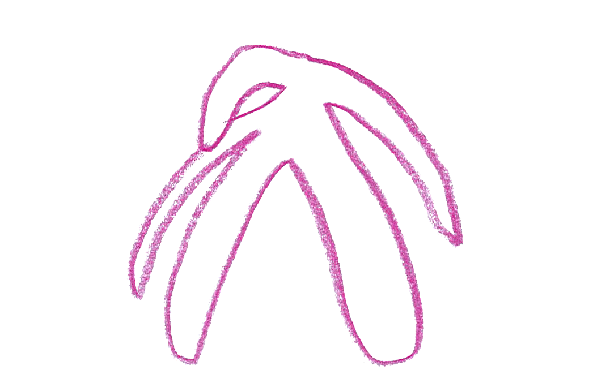

On peut lire sur
le super blog de Mirion Malle l'importance de l'identification dans la fiction.
L'étude montre que dans la représentation des personnages, de nombreux stéréotypes sont encore présents. Chez les enfants, alors que les filles sont plus souvent représentées à l'intérieur, participant à des activités calmes, les garçons occupent l'espace extérieur et pratiquent des activités sportives.
Chez les adultes, les femmes sont souvent des mères, occupées dans
des activités domestiques. Elles représentent 70% des personnages qui font la cuisine et le ménage, et 85% des personnages qui font les courses. Les hommes, moins souvent présentés en pères, participent peu à la gestion du foyer, sauf dans
des activités traditionnellement masculines comme le bricolage ou le jardinage.
Dans les manuels scolaires, seules 22% de femmes ont un métier contre 42% pour les hommes. Sans surprise, les femmes sont quasiment absentes des métiers scientifiques (seulement 3% de femmes) et ne représentent qu’1% de la catégorie «maintien de l’ordre» (gendarmes, militaires, pompier-ière...).
Une présentation partiel du genre
Ce n’est qu'en 2011 que la notion de
genre est introduite dans les manuels de SVT.

Celle-ci est biaisée car ils ne contiennent qu’une représentation binaire des
sexes, et lorsque les variations
intersexes sont évoquées, elles le sont sous l’angle pathologique, comme des «malformations» ou des «dysfonctionnements». La représentation de l’appareil génital féminin est également incomplet. En effet, à la rentrée 2017, seul un manuel sur huit présente correctement
le clitoris alors que certains ne le mentionnent même pas, ce qui a des répercussions sur la méconnaissance des femmes de leur propre corps et a notamment comme conséquence une méconnaissance du plaisir féminin.